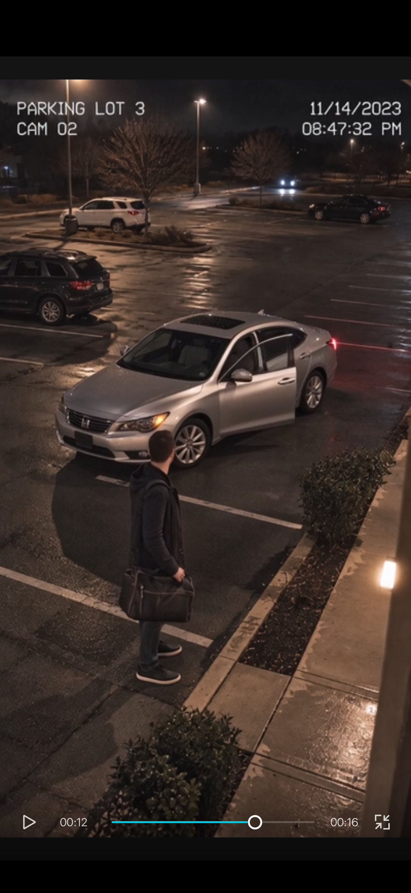
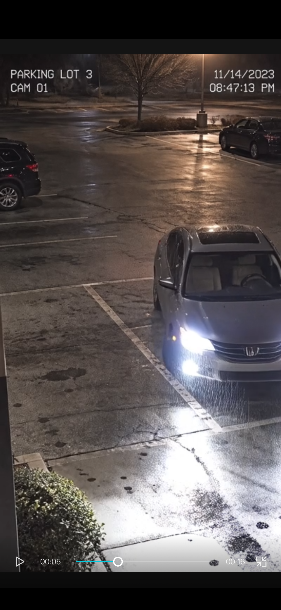

PANIC OPERATOR ARCHIVE
It Wouldn't Let Him Leave
Public fragment / FILE 020
This page holds a short public case log and two selected stills. The video, complete still record, and investigation chapter are in the sealed tray on Patreon.

Video access: Patreon members only.
01 / Case log
The man leaves a silver sedan with a duffel bag. Later views place the sedan behind him as he crosses the wet lot. He faces the vehicle again near the end of the fragment. The last close view shows the front doors open and the visible front seats unoccupied. His next location is not established.
02 / Selected evidence / 2 of 9 plates

Changed orientation
The sedan faces toward the foreground with its front lights on; this differs from its position beside the subject in the earlier view.

Open door
The subject faces the sedan. A front door stands open; the image does not show who opened it.
03 / Operator notes
- CAM / PLACE: CAM 01, CAM 02, CAM 04 / PARKING LOT 3.
- DATE: overlays display November 14, 2023.
- CONTINUITY: camera views are not established as synchronized.
- OBJECT BREAK: the sedan's position and orientation differ across views.
- OCCUPANCY: no operator is clearly identifiable in the supplied views.
- OPEN QUESTION: where is the man after the closing view?
- Remaining plates and close: sealed tray.